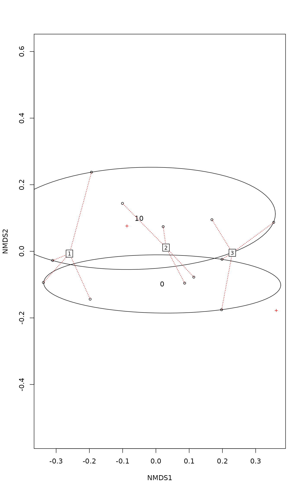

Permutational Multivariate Analysis of Variance Using Distance Matrices
adonis.RdAnalysis of variance using distance matrices --- for partitioning distance matrices among sources of variation and fitting linear models (e.g., factors, polynomial regression) to distance matrices; uses a permutation test with pseudo-\(F\) ratios.
adonis(formula, data, permutations = 999, method = "bray", sqrt.dist = FALSE, add = FALSE, by = "terms", parallel = getOption("mc.cores"), na.action = na.fail, ...)
Arguments
| formula | Model formula. The LHS must be either a community
data matrix or a dissimilarity matrix, e.g., from
|
|---|---|
| data | the data frame for the independent variables. |
| permutations | a list of control values for the permutations
as returned by the function |
| method | the name of any method used in |
| sqrt.dist | Take square root of dissimilarities. This often euclidifies dissimilarities. |
| add | Add a constant to the non-diagonal dissimilarities such
that all eigenvalues are non-negative in the underlying Principal
Co-ordinates Analysis (see |
| by |
|
| parallel | Number of parallel processes or a predefined socket
cluster. With |
| na.action | Handling of missing values on the right-hand-side
of the formula (see |
| ... | Other arguments passed to |
Details
adonis is a function for the analysis and partitioning sums of
squares using dissimilarities. The function is based on the principles
of McArdle & Anderson (2001) and can perform sequential, marginal and
overall tests. The function also allows using additive constants or
squareroot of dissimilarities to avoid negative eigenvalues. but can
also handle semimetric indices (such as Bray-Curtis) that produce
negative eigenvalues. The adonis tests are identical to
anova.cca of dbrda. With Euclidean
distances, the tests are also identical to anova.cca of
rda.
The functions partition sums of squares of a multivariate data set, and
they are directly analogous to MANOVA (multivariate analysis of
variance). McArdle and Anderson (2001) and Anderson (2001) refer to the
method as “permutational manova” (formerly “nonparametric
manova”). Further, as the inputs are linear predictors, and a response
matrix of an arbitrary number of columns, they are a robust alternative
to both parametric MANOVA and to ordination methods for describing how
variation is attributed to different experimental treatments or
uncontrolled covariates. Functions are also analogous to distance-based
redundancy analysis in functions dbrda and
capscale (Legendre and Anderson 1999). Functions provide
an alternative to AMOVA (nested analysis of molecular variance,
Excoffier, Smouse, and Quattro, 1992; amova in the
ade4 package) for both crossed and nested factors.
Value
The function returns an anova.cca result object with a
new column for partial \(R^2\): This is the proportion
of sum of squares from the total, and in marginal models
(by = "margin") the \(R^2\) terms do not add up to
1.
Note
Anderson (2001, Fig. 4) warns that the method may confound
location and dispersion effects: significant differences may be caused
by different within-group variation (dispersion) instead of different
mean values of the groups (see Warton et al. 2012 for a general
analysis). However, it seems that adonis is less sensitive to
dispersion effects than some of its alternatives (anosim,
mrpp). Function betadisper is a sister
function to adonis to study the differences in dispersion
within the same geometric framework.
References
Anderson, M.J. 2001. A new method for non-parametric multivariate analysis of variance. Austral Ecology, 26: 32--46.
Excoffier, L., P.E. Smouse, and J.M. Quattro. 1992. Analysis of molecular variance inferred from metric distances among DNA haplotypes: Application to human mitochondrial DNA restriction data. Genetics, 131:479--491.
Legendre, P. and M.J. Anderson. 1999. Distance-based redundancy analysis: Testing multispecies responses in multifactorial ecological experiments. Ecological Monographs, 69:1--24.
McArdle, B.H. and M.J. Anderson. 2001. Fitting multivariate models to community data: A comment on distance-based redundancy analysis. Ecology, 82: 290--297.
Warton, D.I., Wright, T.W., Wang, Y. 2012. Distance-based multivariate analyses confound location and dispersion effects. Methods in Ecology and Evolution, 3, 89--101.
See also
Examples
#> #> Call: #> adonis(formula = dune ~ Management * A1, data = dune.env) #> #> Permutation: free #> Number of permutations: 999 #> #> Terms added sequentially (first to last) #> #> Df SumsOfSqs MeanSqs F.Model R2 Pr(>F) #> Management 3 1.4686 0.48953 3.2629 0.34161 0.002 ** #> A1 1 0.4409 0.44089 2.9387 0.10256 0.018 * #> Management:A1 3 0.5892 0.19639 1.3090 0.13705 0.210 #> Residuals 12 1.8004 0.15003 0.41878 #> Total 19 4.2990 1.00000 #> --- #> Signif. codes: 0 ‘***’ 0.001 ‘**’ 0.01 ‘*’ 0.05 ‘.’ 0.1 ‘ ’ 1## overall tests adonis(dune ~ Management*A1, data = dune.env, by = NULL)#> #> Call: #> adonis(formula = dune ~ Management * A1, data = dune.env, by = NULL) #> #> Permutation: free #> Number of permutations: 999 #> #> Terms added sequentially (first to last) #> #> Df SumsOfSqs MeanSqs F.Model R2 Pr(>F) #> Management 3 1.4686 0.48953 3.2629 0.34161 0.002 ** #> A1 1 0.4409 0.44089 2.9387 0.10256 0.015 * #> Management:A1 3 0.5892 0.19639 1.3090 0.13705 0.220 #> Residuals 12 1.8004 0.15003 0.41878 #> Total 19 4.2990 1.00000 #> --- #> Signif. codes: 0 ‘***’ 0.001 ‘**’ 0.01 ‘*’ 0.05 ‘.’ 0.1 ‘ ’ 1### Example of use with strata, for nested (e.g., block) designs. dat <- expand.grid(rep=gl(2,1), NO3=factor(c(0,10)),field=gl(3,1) ) dat#> rep NO3 field #> 1 1 0 1 #> 2 2 0 1 #> 3 1 10 1 #> 4 2 10 1 #> 5 1 0 2 #> 6 2 0 2 #> 7 1 10 2 #> 8 2 10 2 #> 9 1 0 3 #> 10 2 0 3 #> 11 1 10 3 #> 12 2 10 3Agropyron <- with(dat, as.numeric(field) + as.numeric(NO3)+2) +rnorm(12)/2 Schizachyrium <- with(dat, as.numeric(field) - as.numeric(NO3)+2) +rnorm(12)/2 total <- Agropyron + Schizachyrium dotplot(total ~ NO3, dat, jitter.x=TRUE, groups=field, type=c('p','a'), xlab="NO3", auto.key=list(columns=3, lines=TRUE) )### Incorrect (no strata) perm <- how(nperm = 199) adonis(Y ~ NO3, data = dat, permutations = perm)#> #> Call: #> adonis(formula = Y ~ NO3, data = dat, permutations = perm) #> #> Permutation: free #> Number of permutations: 199 #> #> Terms added sequentially (first to last) #> #> Df SumsOfSqs MeanSqs F.Model R2 Pr(>F) #> NO3 1 0.024476 0.024476 1.9545 0.16349 0.23 #> Residuals 10 0.125227 0.012523 0.83651 #> Total 11 0.149703 1.00000## Correct with strata setBlocks(perm) <- with(dat, field) adonis(Y ~ NO3, data = dat, permutations = perm)#> #> Call: #> adonis(formula = Y ~ NO3, data = dat, permutations = perm) #> #> Blocks: with(dat, field) #> Permutation: free #> Number of permutations: 199 #> #> Terms added sequentially (first to last) #> #> Df SumsOfSqs MeanSqs F.Model R2 Pr(>F) #> NO3 1 0.024476 0.024476 1.9545 0.16349 0.015 * #> Residuals 10 0.125227 0.012523 0.83651 #> Total 11 0.149703 1.00000 #> --- #> Signif. codes: 0 ‘***’ 0.001 ‘**’ 0.01 ‘*’ 0.05 ‘.’ 0.1 ‘ ’ 1